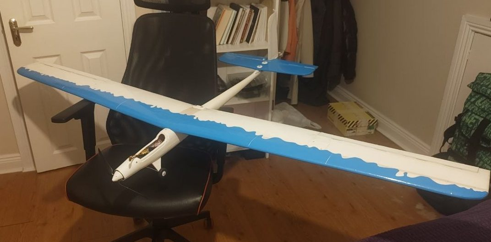
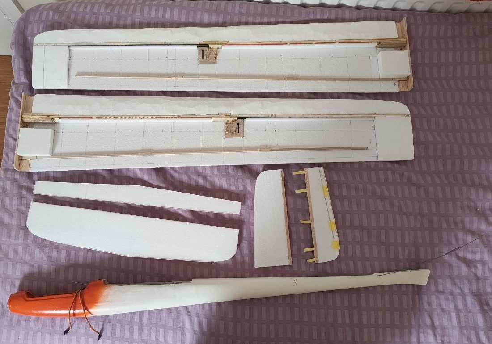
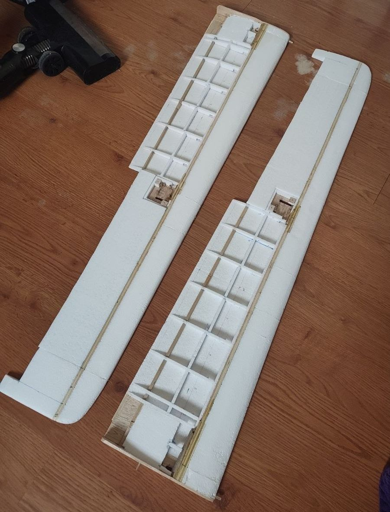
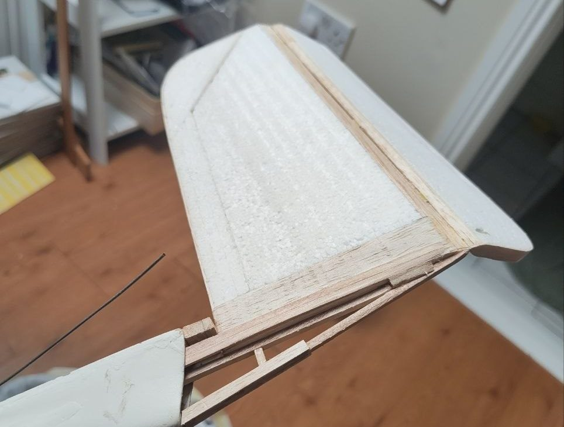
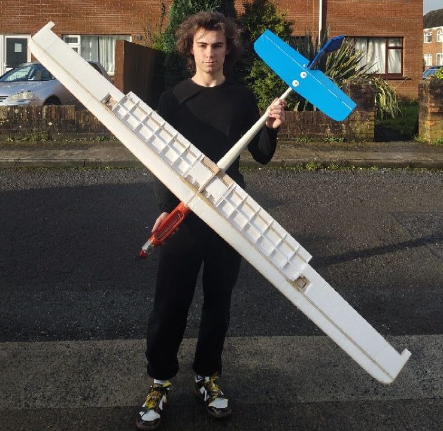
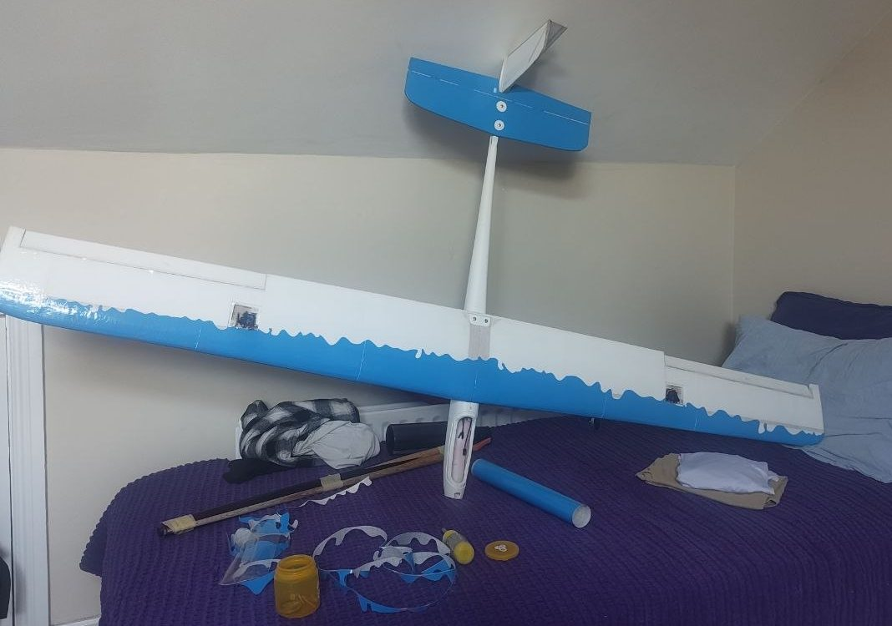

2 m glider
My first major glider project: a 2 m RC glider of my own design, built entirely by hand from balsa, foam and plywood.
| Status | Finished |
|---|---|
| Dates | June 2025 to August 2026 |
| My role | Solo project: design and build |
| Wingspan | 2 m |
| Mass | 1.2 kg, measured with electronics fitted |

Goal and constraints
This was my first major glider project. I built it as a hobby, but approached it with an engineering mindset: working within fixed constraints and solving problems as they came up.
- Workspace. The aircraft was built entirely in my bedroom, which ruled out composites and power tools.
- Manufacturing. I had no access to 3D printing or laser cutting at the time, so every part was cut and shaped by hand.
- Transport. The aircraft had to be easy to manoeuvre indoors and small enough to fit in a car.
Design
The glider is my own design, developed from my previous models and from existing glider designs.
- Two-piece wing. The wing splits at the centre, so the aircraft can be moved around a small room and carried in a car.
- Hand-shaped, low-camber airfoil. Based on what had worked on my earlier models.
- T-tail. A simple, proven layout that I had already built before, which kept the design risk low.
Build
| Materials | Balsa, foam, plywood |
|---|---|
| Processes | Hand cutting, shaping and sanding; bonded assembly |
| Tools | Scalpel, fret saw, sanding block |
| Adhesives | Cyanoacrylate (super glue) for wood; alcohol-based adhesive for foam |






Specs
| Wingspan | 2 m |
|---|---|
| Airfoil | Hand-shaped, low camber |
| Mass | 1.2 kg, measured with electronics fitted |
| Wing area | TODO: root and tip chord, to calculate |
| Wing loading | TODO: calculated once wing area is known |
| Controls | Ailerons, T-tail surfaces TODO: which tail surfaces move |
| Power and electronics | Motor TODO: motor, propeller, battery, servos, receiver |
Flight results
TODO: first flights: launch, flight time, handling
Problems and how I solved them
Centre of gravity
The finished airframe was tail-heavy, putting the centre of gravity too far aft. I made a CG balancing rig (later 3D printed) to find the balance point accurately, removed a significant amount of weight from the tail, and added about 50 g of aluminium ballast in the nose.
Servo installation
Routing the servo cables through the wing proved difficult. I built a cable channel through the wing, so each servo can now be removed and refitted easily rather than being permanently glued in place.
Electronics quality
Some of the electronic components were of poor quality. TODO: what failed and how you dealt with it
What I'd do differently
TODO: lessons for the next aircraft